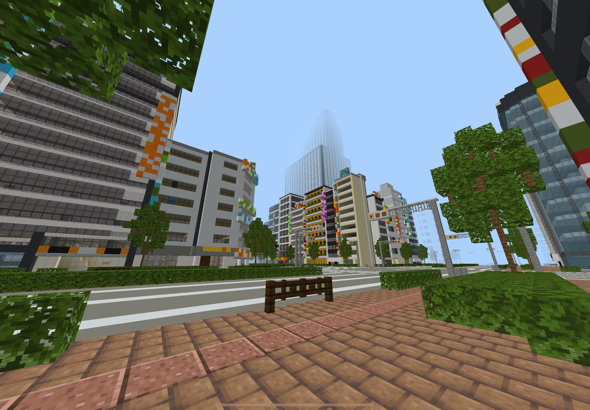
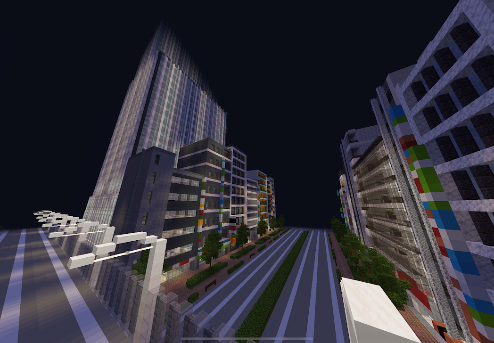
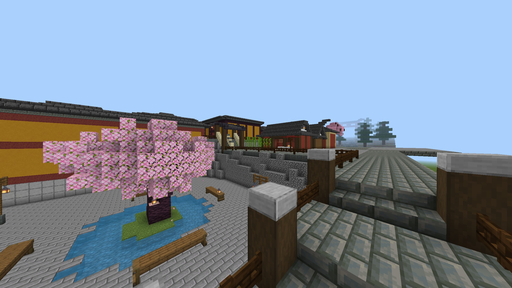
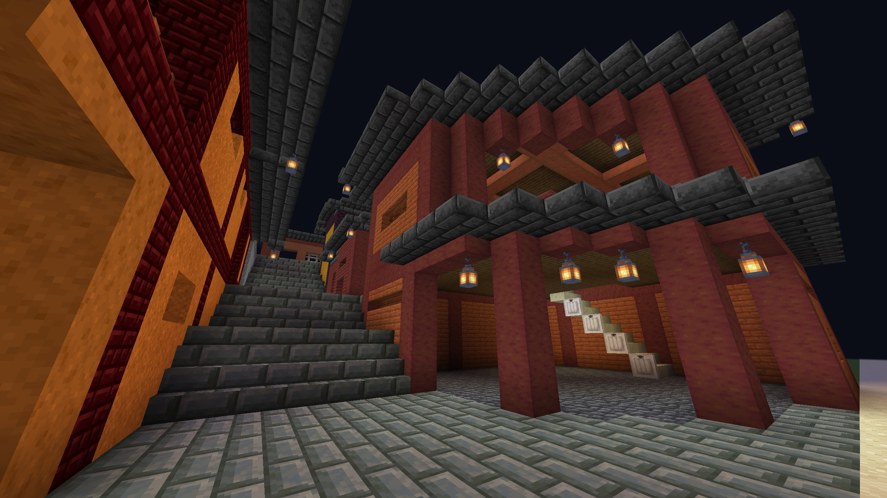
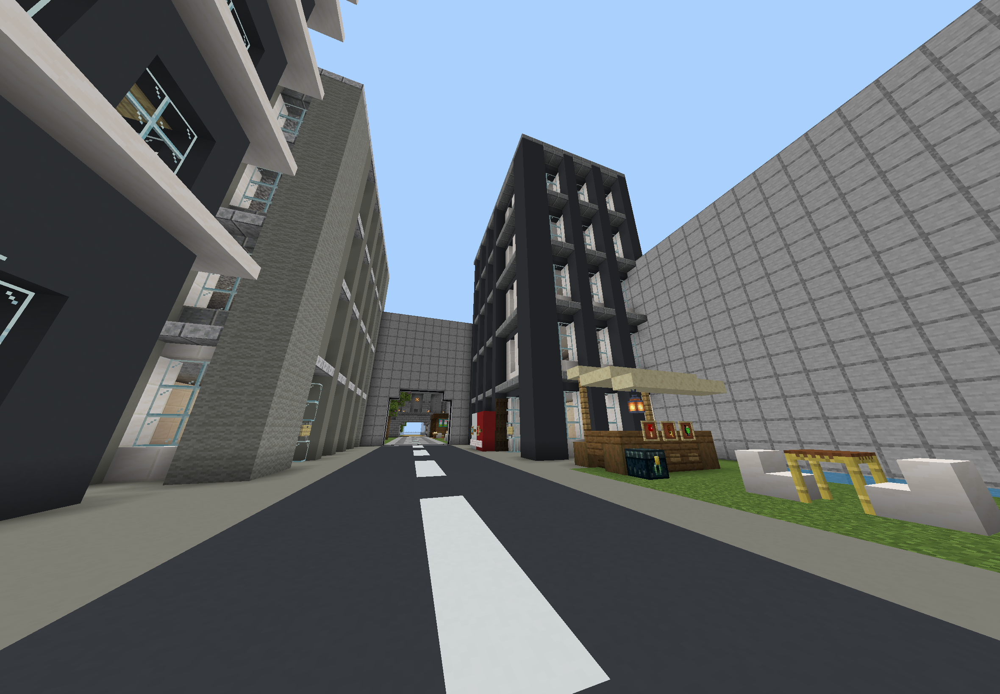
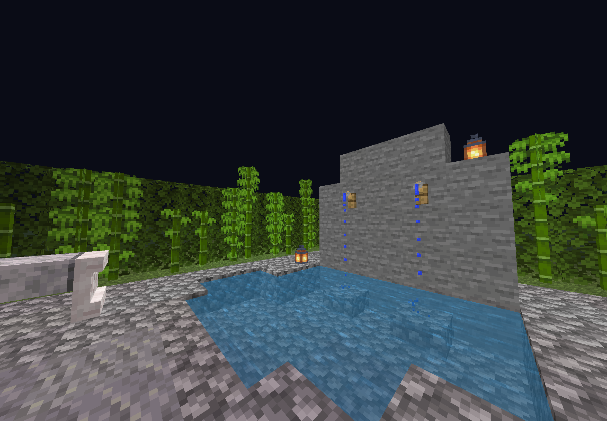

Minecraft
ここでは、私が作った街を紹介しています
作品を見るメインストリート沿いに風見市ツインタワーや、繁華街、高層ビル群、マンションが並んでいる。


一部の建物にしか内装はないが、市役所にある本でその建物の設定資料集を読むことができる。
道が不規則になっていて路地多い、道には様々なお店が並んでおり毎日お祭りのような雰囲気を醸し出している。


道や建物が段々となっていて街の立体感を出している。
建物１つ１つに鬼ごっこや人狼、ボートレースなどのミニゲームがあり（他にもまだまだあるよ！）、壁を通るたび全く違う雰囲気の建物が出てくる。


ミニゲーム以外にも温泉や肝試しも存在しており、観光するだけでも十分楽しむことができる。
ここまで見ていただきありがとうございます！
こんにちは、この３つのマップとこのサイトを作った高校3年生です！(2026年現在)
初めて自力で（AIに聞きつつ）webサイト作りに挑戦しました！見にくかったりするかもしれませんが
これから経験を積み、見やすく作れるように努力していきます！
このサイトもどんどん進化する予定なのでお楽しみに！、楽しみにしてくれる人がいれば...
マップ配布についてですが、
これについては、現在このマップを著作権に引っかからないよう修正しています。（マップにyoutubeより丸パクリした建築があるため）
完成を楽しみに待っていてください！